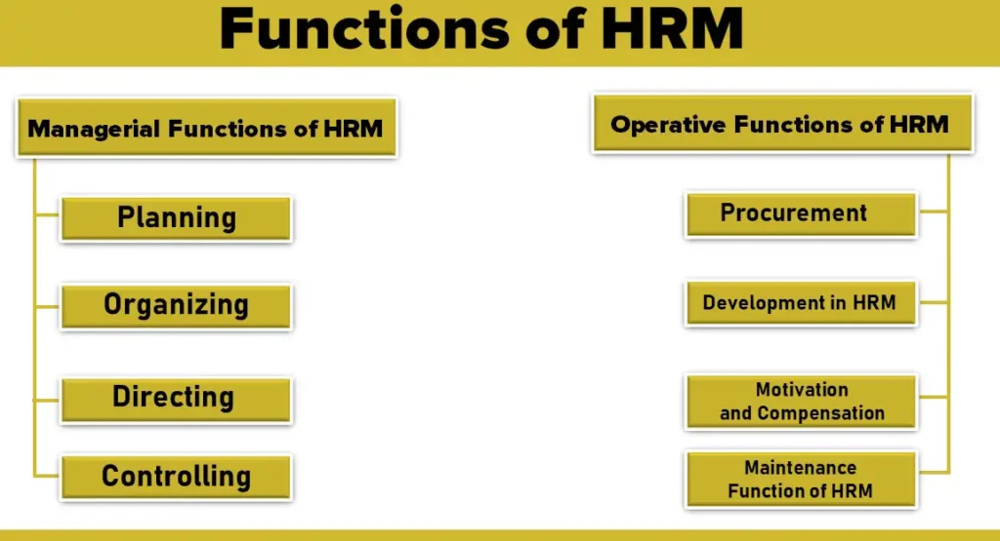

Expanded Nursing Uganda Explanation
Human resource management should be reviewed through safe maternal and newborn assessment, early recognition of danger signs, respectful communication and timely referral. Connect the definition to vital signs, bleeding, fetal or newborn wellbeing, patient education and local protocol requirements.
01 HUMAN RESOURCE MANAGEMENT
Human Resource Management is a process of staffing the organization and sustaining high employee performance.
Simply it is managing the employment relationship.
Human Resource Management has been seen by some scholars as having the purpose of ensuring that the employees of a company are used in such a way that the employer obtains the greatest possible benefit from their abilities and in return the employees obtain both material and psychological rewards from their work.
Any organization will exist to either make a profit or offer a service or goods
This is achieved by using the factors of production, namely:
- Human resources
- Land
- Capital
- Entrepreneurship
Of all these, HR is definitely the most important since all the others depend on it.
Human Resource Management Involves: Acquiring the right number of employees for the organization, Deploying them to their right places, Directing them from in their day-to-day operations, Ensuring that they keep on the right track for which they were recruited.
02 Concepts of Human Resource Management
- Strategic integration: this refers to the integration of HRM policies into organization-wide strategic plans such as; selection, training, and development into a coherent whole. This strategic approach requires top management to assume full responsibility for seeing that there is strategic fit between business and HR strategies. In hospitals, HR professionals must ensure that their policies and practices are aligned with the hospital’s overall strategic plan. This means that HR must work closely with hospital leadership to understand the hospital’s goals and objectives, and to develop HR strategies that will support those goals. For example, if a hospital is planning to expand its services, HR will need to develop a plan to recruit and hire the necessary staff.
- Commitment : This refers to voluntary identification with the organizational goals which (David Gest) terms a strong belief in and acceptance of an organization’s goals and values. HR professionals in hospitals must also promote employee commitment to the organization. This can be done by creating a positive work environment, providing opportunities for professional development, and recognizing and rewarding employee achievements. When employees are committed to their organization, they are more likely to be productive and to provide high-quality patient care.
- Flexibility : This comprises functional and numerical flexibility. Functional flexibility encompasses multi-skilling. Numerical flexibility includes ; downsizing and performance related pay. Hospitals are constantly changing, so HR professionals must be flexible and adaptable. They must be able to respond to changes in the healthcare industry, such as new regulations or advances in technology. HR professionals must also be able to manage a diverse workforce, with employees from different backgrounds and cultures.
- Quality : It includes behaviors and practices which ensure quality and productivity at all levels. HR professionals in hospitals play a key role in ensuring the quality of patient care. They do this by recruiting and hiring qualified staff, developing and implementing training programs, and managing employee performance. HR professionals also work to create a positive work environment that supports high-quality patient care.
- Mutuality : It among others connotes mutuality of purpose, intent and ownership of an organization’s core values. HR professionals in hospitals must promote mutuality between the organization and its employees. This means that HR must work to create a shared understanding of the organization’s goals and values, and to ensure that employees feel like they are part of the team. When there is mutuality, employees are more likely to be engaged and productive.
- Coherence : This refers to the development of a mutually reinforcing, supporting, interactive and interrelated set of human resources and employment policies and programmes that; Jointly contribute to the organizational strategies. Match resources to the organizational needs. Foster improvements in performance that lead to an organization’s competitive advantage. HR professionals in hospitals must ensure that their policies and practices are coherent and consistent. This means that all of the HR functions, such as recruiting, hiring, training, and performance management, must work together to support the hospital’s overall goals and objectives. When there is coherence, HR is more effective and efficient.
03 Functions of Human Resource Management
The functions of HRM may broadly be classified into two categories:
- Managerial Functions of HRM : Managerial functions refer to the high-level responsibilities that HR managers perform as part of the overall management of the organization . These functions involve planning, organizing, directing, and controlling the human resources within the HR department itself.
- Operative Functions of HRM : Operative functions in HRM involve specific , day-to-day activities related to managing human resources . These functions are more focused on the execution and implementation of HR policies and procedures. The operative functions are categorized into procurement, development, motivation and compensation, maintenance, and integration.
- Planning : This involves planning in advance what quantity of human resources is needed for adequate performance of the tasks at hand. Determining the future course of action to achieve desired results, including personnel program planning for recruitment, selection, and training.
- Organizing : This involves deployment of the workers by assigning them to their tasks and departments. This is done after giving them the relevant tools for the tasks. Proper grouping of personnel activities, assigning tasks, and delegating authority to create a structural framework.
- Directing/Leading : This involves the HR managers providing effective leadership that encourages the workers to be more productive. Thus the managers must; Monitor the workers, Handle or minimize conflicts amongst the workers, Ensure both downward and vertical communication within the organisation. Supervising and guiding personnel, involving motivation, leadership, and addressing employee concerns.
- Controlling : This involves the regulation of activities to ensure that every thing happens as earlier planned, otherwise corrective measures should be instituted through training, promotion, demotion, dismissal, disciplinary action etc.
Also called HRM Responsibilities/Practices
1. Procurement Function:
- Job Analysis : Collecting information about specific job operations and responsibilities.
- Human Resources Planning : Determining and ensuring an adequate number of qualified personnel for organizational needs.
- Recruitment : Searching for and stimulating prospective employees to apply for jobs.
- Selection : Ascertaining qualifications, experience, skills, and knowledge of applicants for job suitability.
- Placement : Ensuring a perfect fit by matching qualifications, experience, and skills with the job.
- Induction and Orientation : Rehabilitating new employees, introducing practices, policies, and organizational principles.
2. Development in HRM:
- Training : Continuous learning of skills, knowledge, abilities, and attitudes to meet organizational goals.
- Executive Development : Systematic development of managerial skills through appropriate programs.
- Career Planning and Development : Planning and implementing career plans, including succession planning for executive positions.
- Human Resource Development : Aims at developing the total organization, creating a climate for individual and organizational goal achievement.
3. Motivation and Compensation:
- Job Design : Organizing tasks and responsibilities to create a productive unit of work.
- Work Scheduling: Structuring work to motivate employees through various methods.
- Motivation : Inspiring people through intrinsic and extrinsic rewards.
- Job Evaluation : Determining the value of jobs within the organization.
- Performance Appraisal : Evaluating and appraising employees’ job performance.
- Compensation Administration : Divising how much an employee should be paid.
- Incentives and Benefits : Offering rewards and services, including fringe benefits, to all employees.
4. Maintenance Function of HRM:
- Health and Safety : Enforcing safety and health standards to protect employees.
- Employee Welfare : Offering services and facilities for employees’ well-being.
- Social Security Measures : Providing benefits like compensation, maternity benefits, and retirement benefits.
5. Integration Function of HRM:
- Grievance Redressal : Addressing complaints and grievances promptly.
- Discipline : Ensuring adherence to rules, regulations, and procedures for goal attainment.
- Teams and Teamwork: Encouraging teamwork and self-managed teams.
- Collective Bargaining : Negotiating labor contracts between management and unions.
- Employee Participation and Empowerment: Sharing decision-making power with employees.
- Industrial Relations: Maintaining harmonious relations between labor and management.
04 HUMAN RESOURCE PLANNING
Click Here
05 Nursing Uganda Clinical Lens
Use Human resource management as a practical nursing topic, not only a memorized definition. Translate theory into safe decisions, accountability, communication and service improvement.
- What to understand first: define human resource management, identify the normal or expected pattern, then explain what changes when the patient is unwell.
- Why it matters in care: the nurse must recognize risk early, explain findings clearly, document accurately and know when to escalate.
- How to revise it: connect each point to assessment, nursing diagnosis or care problem, intervention, rationale and evaluation.
06 Assessment Guide
- The problem, stakeholders, available resources, policy requirements and ethical issues.
- Risks to patients, staff, confidentiality, quality, costs and continuity.
- Documentation, reporting lines, supervision and evaluation measures.
07 Nursing Priorities, Rationales and Outcomes
- Use evidence, policy and professional standards to guide action.
- Communicate clearly, document decisions and protect confidentiality.
- Evaluate whether the action improves safety, learning or service delivery.
The rationale for these priorities is patient safety: nursing actions should prevent deterioration, reduce discomfort, support recovery and create clear evidence for the next caregiver.
- Expected outcome: The plan is documented, realistic, ethical and improves patient care or learning outcomes.
08 Patient Teaching and Revision Check
- Explain human resource management in simple language the patient or caregiver can repeat back.
- Teach warning signs, medicine or follow-up instructions, hygiene or lifestyle points where relevant.
- For exams, prepare a short answer using: definition, causes or risk factors, signs, assessment, management, complications and prevention.
- For ward practice, document baseline findings, actions taken, patient response and the plan for review.
Illustrations and Diagrams (4)



Related Video Lectures
Watch nursing lecture videos on YouTube for this topic. Opens in a new tab.
Watch on YouTubeExternal link: YouTube may use its own cookies and terms. Nursing Uganda is not affiliated with YouTube.